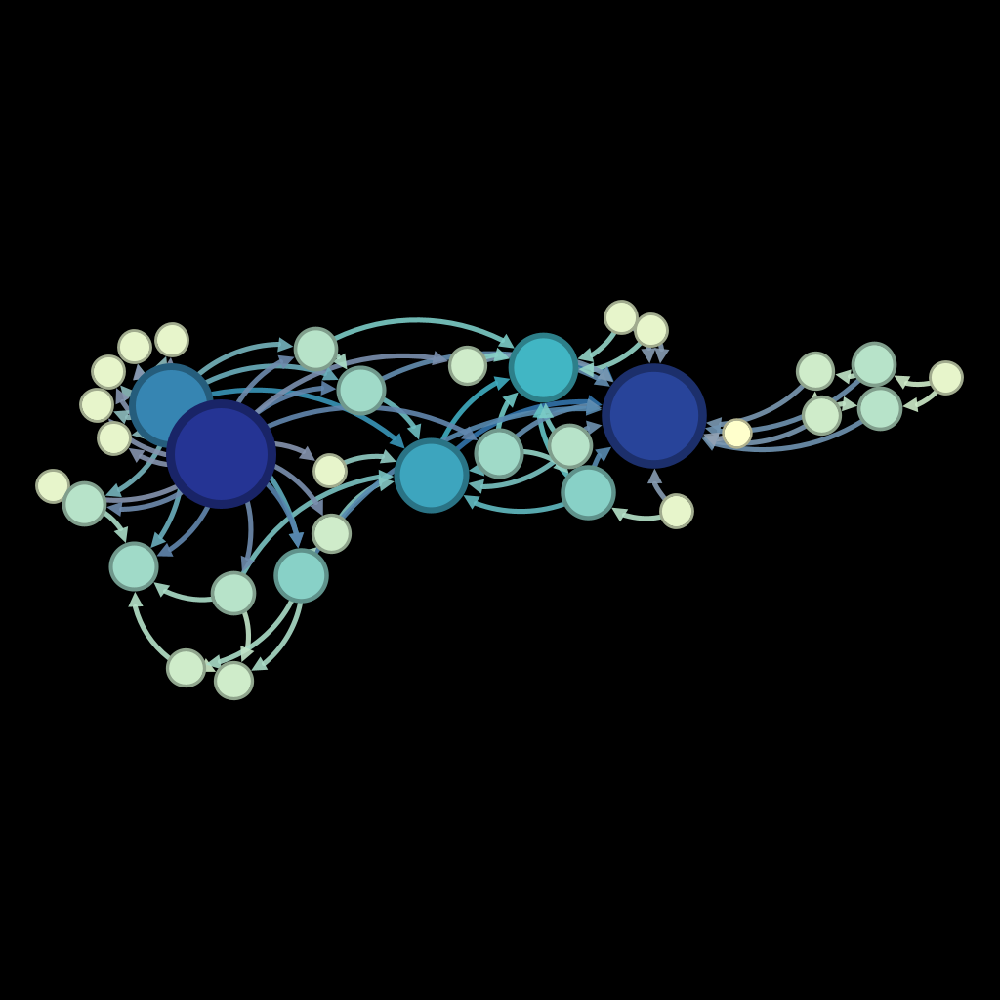
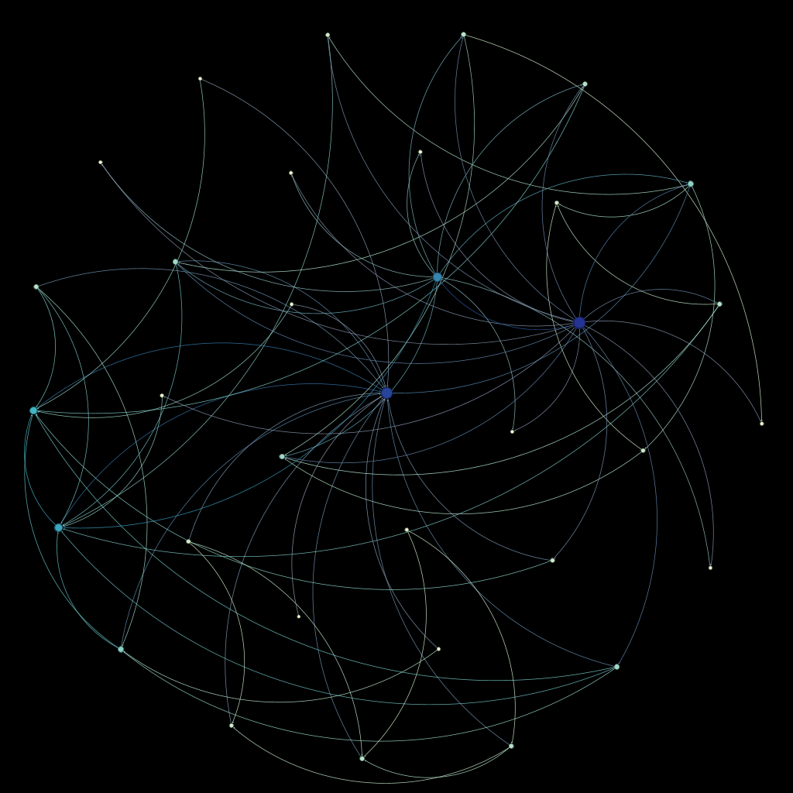
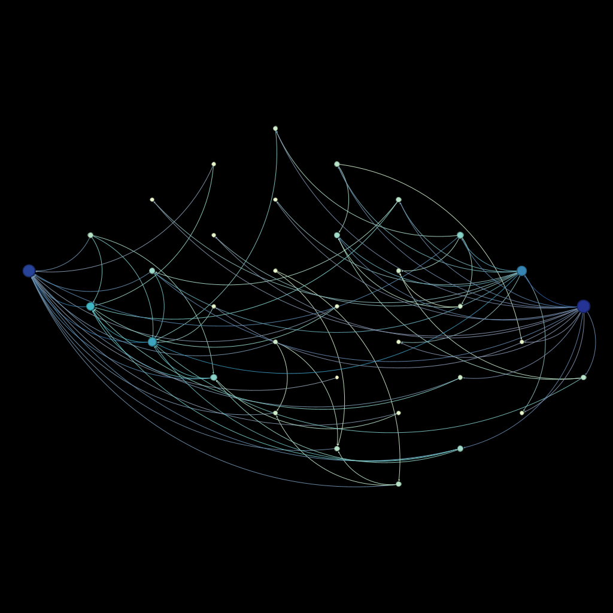

ABOUT Gephi
Gephi is an open-source network analysis and visualization software package. It is designed to help users explore, analyze, and visualize complex networks, such as social networks, biological networks, and transportation networks.
Gephi has a user-friendly interface that allows users to import network data from a variety of sources, including CSV files, Excel spreadsheets, and databases. It offers a range of built-in algorithms for analyzing network structures, such as degree centrality, betweenness centrality, and clustering coefficient, as well as tools for filtering, manipulating, and visualizing the data.
One of the key features of Gephi is its ability to create high-quality network visualizations, using a variety of layout algorithms, such as force-directed layouts, circular layouts, and hierarchical layouts. Users can customize the visual appearance of the network, such as node color, size, and shape, and edge thickness and curvature, to create visually compelling and informative network visualizations.
Gephi is also highly extensible, with a plugin architecture that allows users to create custom plugins and extensions to add new features and functionality to the software. This makes it a valuable tool for researchers, data scientists, and analysts working with complex network data.
Force Atlas is a popular layout algorithm in Gephi for creating network visualizations. It is a force-directed layout algorithm that simulates the movement of particles in a physical system to create an optimized layout of nodes and edges in a network. The algorithm works by treating each node in the network as a particle and simulating a physical force that attracts nodes that are connected by edges and repels nodes that are not connected. The algorithm iteratively adjusts the positions of the nodes based on the net forces acting on them, until an equilibrium is reached. Force Atlas is a useful algorithm for visualizing complex networks because it tends to create layouts that emphasize clusters of densely connected nodes and reveal patterns of connectivity within the network. It also allows users to adjust various parameters, such as the strength of the repulsive and attractive forces and the amount of jitter applied to the nodes, to fine-tune the layout to their specific needs. In summary, the Force Atlas layout algorithm in Gephi is a powerful tool for creating visually compelling and informative network visualizations.
The Fruchterman-Reingold layout algorithm is a force-directed layout available in Gephi. It is used to create network visualizations that emphasize the relationships between nodes by positioning them in a way that minimizes the amount of overlap and crossing of edges. The algorithm works by simulating a physical system where nodes repel each other and edges attract nodes that they connect. The algorithm iteratively adjusts the position of each node based on the net forces acting on it until it reaches a state of equilibrium where the forces balance out. The Fruchterman-Reingold algorithm allows users to adjust various parameters, such as the strength of the attractive and repulsive forces and the initial temperature of the system, to customize the appearance of the network visualization. Users can also use color and labeling to highlight specific nodes or groups of nodes. In summary, the Fruchterman-Reingold layout algorithm in Gephi is a powerful tool for creating visually appealing and informative network visualizations. It is particularly useful for identifying clusters of related nodes and understanding the overall structure and patterns of connectivity within a network.
The Isometric layout algorithm is a 3D force-directed layout available in Gephi. It is used to create visually appealing 3D network visualizations that emphasize the relationships between nodes by positioning them in a way that minimizes the amount of overlap and crossing of edges. The algorithm works by simulating a physical system where nodes repel each other and edges attract nodes that they connect. Unlike other force-directed algorithms, the Isometric layout algorithm positions nodes in a 3D space rather than a 2D space. The layout aims to create an evenly spaced and visually balanced 3D representation of the network. The Isometric layout algorithm allows users to adjust various parameters, such as the strength of the attractive and repulsive forces and the initial temperature of the system, to customize the appearance of the network visualization. Users can also use color and labeling to highlight specific nodes or groups of nodes. In summary, the Isometric layout algorithm in Gephi is a powerful tool for creating visually appealing 3D network visualizations. It is particularly useful for understanding the spatial relationships between nodes in a complex network and identifying clusters of related nodes in a visually striking way.
